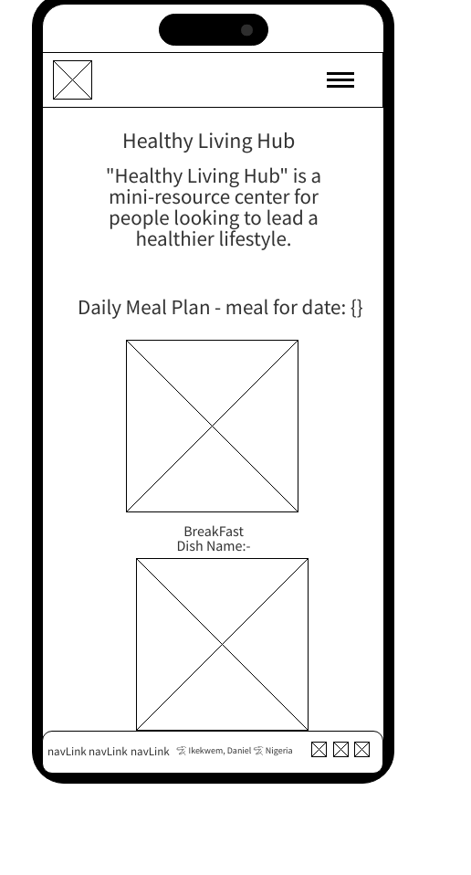
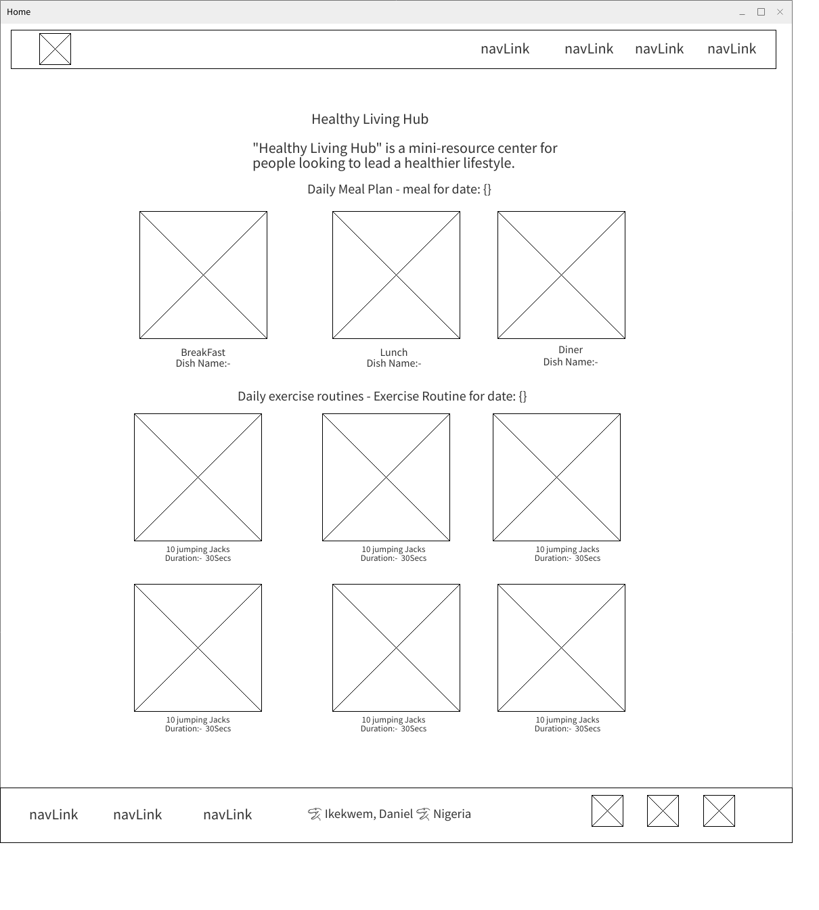

Healthy Living Hub
This name represents a website focused on promoting a healthy lifestyle by offering resources on nutrition, fitness, and mental well-being. The name was selected to reflect the holistic approach to health and create an inviting space for users seeking improvement in various aspects of their well-being.
The Healthy Living Hub aims to provide comprehensive information on living a healthier lifestyle. Users will find healthy daily meal plans, daily exercise routines, and tips for mental well-being. The site will also include interactive tools like a calorie calculator. Visitors will be encouraged to return frequently to utilize dynamic tools and discover new content.
Below is a basic wireframe sketch for the mobile and desktop layout of the homepage:
Simple stacked layout with a navigation bar at the top, followed by sections for the latest articles, meal planner, and workout planner in a vertical flow.
A two-column layout with navigation on the left and content on the right. The meal planner and workout planner will be displayed side by side for larger screens.
